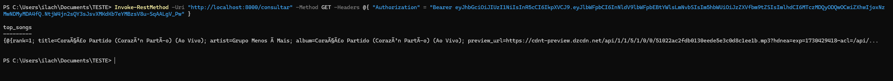

Testando a API
Para demonstrar o funcionamento de cada endpoint, aqui estão alguns exemplos usando os comandos fornecidos em Usando a API.
POST /registrar:

POST /login:

GET /consultar:

Video da execução:
https://drive.google.com/file/d/11KQkN-TeJSlnvjZ5QXC9eBWPTq7pGhsm/preview